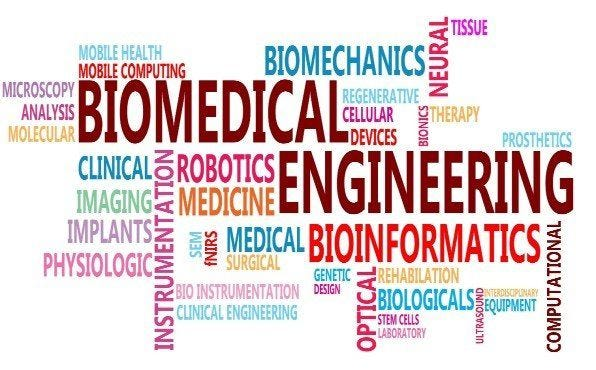
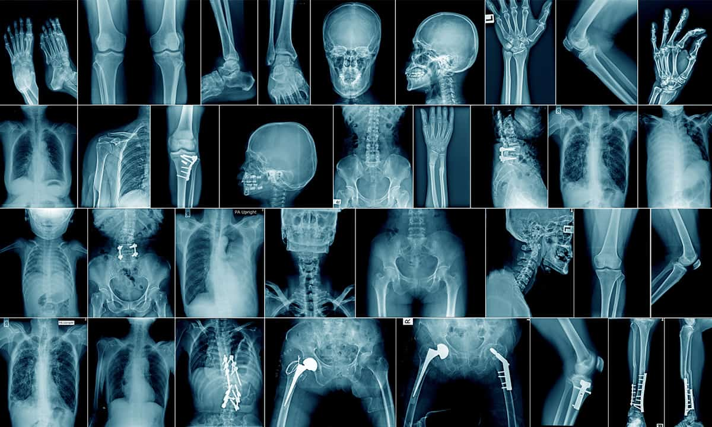
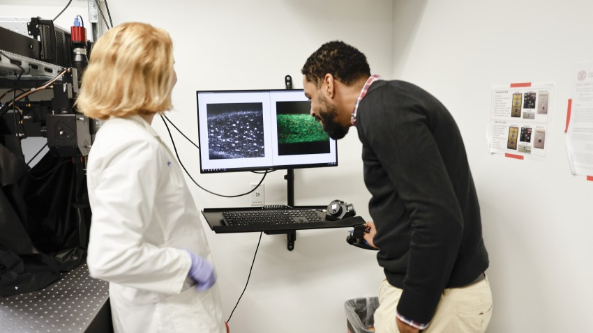

Experience
Teaching Assistant – BME 304: Medical Imaging
University at Buffalo
Spring 2025
- Assisted lectures and grading on CT, MRI, ultrasound, and nuclear imaging.
- Held review sessions and supported homework/exam clarification.

Teaching Assistant – BME 503: Image Processing
University at Buffalo
Spring 2023
- Led lab exercises on image segmentation and digital filtering.
- Supported student MATLAB debugging and exam preparation.

Teaching Assistant – BME 302: Medical Devices
University at Buffalo
Fall 2022
- Supervised labs on biomedical sensors and medical device prototyping.
- Guided teams on technical documentation and testing protocols.

Research Assistant
University at Buffalo, Biomedical Engineering
Sep 2021 – Present
- Led PhD projects in photoacoustic imaging and AI-assisted diagnostics.
- Published in IEEE TUFFC, BOE, Optica; worked on NIH-funded grants.

Junior Accountant
Super Vape, Richmond Hill, Canada
Mar 2024 – Jul 2024
- Handled invoices, payroll, and vendor management.
- Generated financial reports and summaries for review.

Staff Accountant (Co-op)
KRP LLP, Markham, Canada
Sep 2023 – Dec 2023
- Prepared corporate tax files and year-end financial statements.
- Participated in client audits and compliance documentation.

Co-founder & Core Engineer
High-Precision Sensor Company (Beijing & Buffalo)
2015 – Present (Part-time)
- Designed and deployed high-accuracy sensor hardware (laser, ultrasonic).
- Led firmware programming in C/Python with AI/GPT integrations.
- Expanded sales network into China, US, Singapore, and Middle East.

Research Assistant
Cornell University, Dr. Lewis Lab
Sep 2020 – Jun 2021
- Developed mouse imaging protocol using multiphoton microscopy.
- Analyzed osteocyte calcium signaling under mechanical loading.

Research & Development Engineer
Chinese Academy of Sciences, Beijing
May 2018 – Sep 2020
- Led signal communication system for aerospace/rocket submodules.
- Designed embedded software and performed real-time tests.

Undergraduate Research Assistant
University of Kentucky
Jan 2018 – Jan 2019
- Built biomedical GUIs and optimized image-processing pipelines.
- Coded in C# and LabView for neonatal care devices.